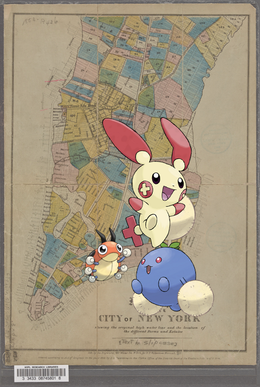
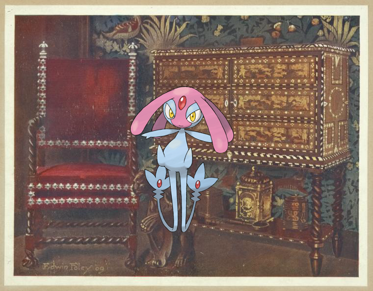
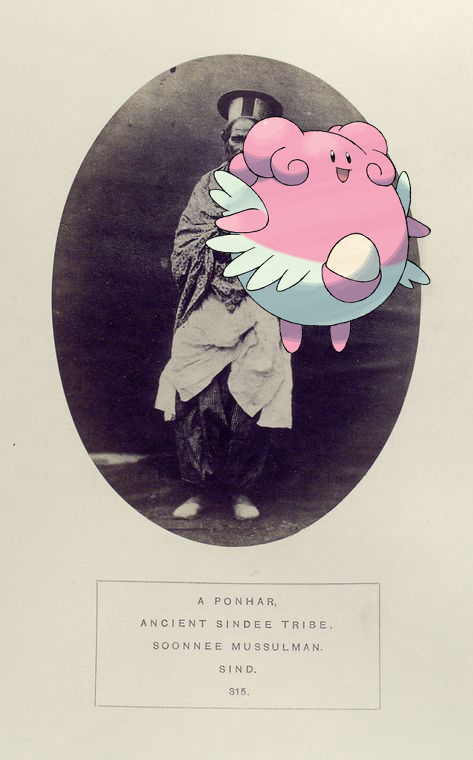
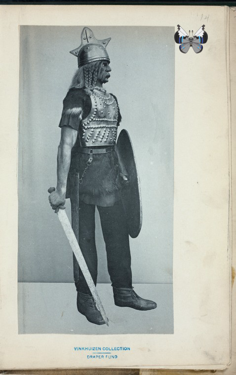
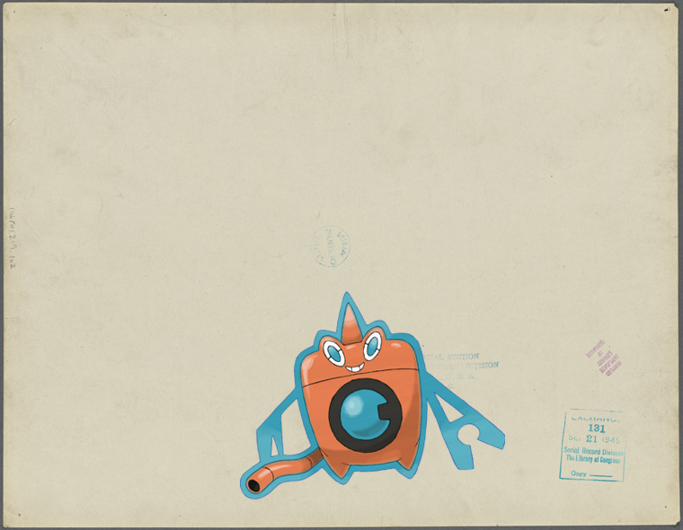
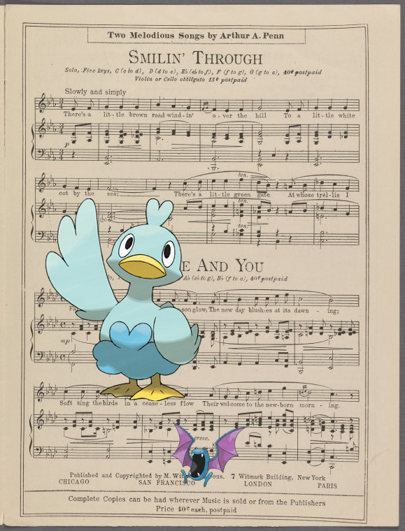
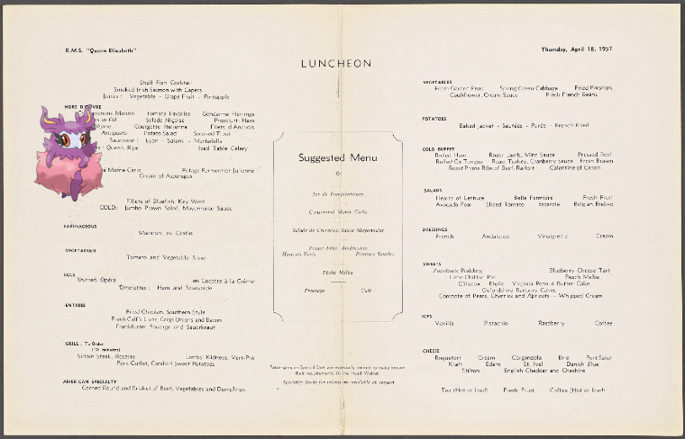
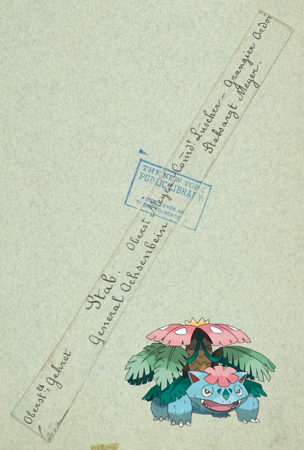
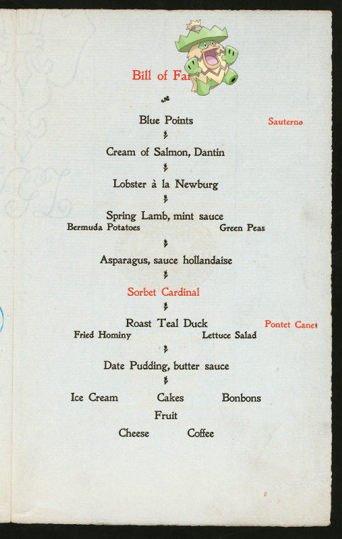
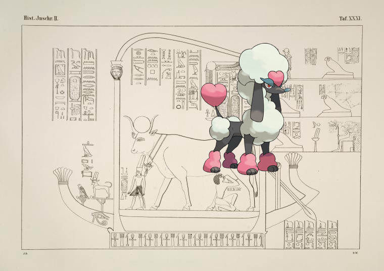

Pokémon in the NYPL archives
2018-11-2 20:10:07

Jumpluff, Ledyba, Plusle on
Map of the city of New York, shewing the original high water line and the location of the different farms and estates.
2018-11-2 18:10:08

Mesprit |
Group of late sixteenth-century continental furniture: Portuguese cabinet of chestnut, inlaid with ivory, ebony, and coloured woods, spiral turned arm-chair with silver finials and nails.
.
2018-11-2 16:10:04

Blissey –
A Ponhar, ancient Sindee tribe, Soonnee Mussulman, Sind
.
2018-11-2 14:10:04

@
Roman Empire.
!
2018-11-2 12:10:07

|
“American soldiers advancing up the slopes of Hill 240…”
!
2018-11-2 10:10:08

Golbat, Ducklett @
My wild Irish rose
!
2018-11-2 08:10:05

Aromatisse |
R.M.S. "Queen Elizabeth"
.
2018-11-2 06:10:04

Venusaur |
France, 1877-1885
.
2018-11-2 04:16:49

Ludicolo |
14TH ANNUAL DINNER [held by] NEW YORK ASSOCIATION OF THE ALUMNI OF PHILIPS EXETER ACADEMY [at] "THE WINDSOR HOTEL, NEW YORK, NY" (HOT;)
2018-11-1 22:10:04

–
Einige mythologische Darstellungen und Bauinschriften aus den Räumen der 3. und 4. Terrasse.
!
65
|
64
|
63
|
62
|
61
|
60
|
59
|
58
|
57
|
56
|
55
|
54
|
53
|
52
|
51
|
50
|
49
|
48
|
47
|
46
|
45
|
44
|
43
|
42
|
41
|
40
|
39
|
38
|
37
|
36
|
35
|
34
|
33
|
32
|
31
|
30
|
29
|
28
|
27
|
26
|
25
|
24
|
23
|
22
|
21
|
20
|
19
|
18
|
17
|
16
|
15
|
14
|
13
|
12
|
11
|
10
|
9
|
8
|
7
|
6
|
5
|
4
|
3
|
2
|
1
|
0